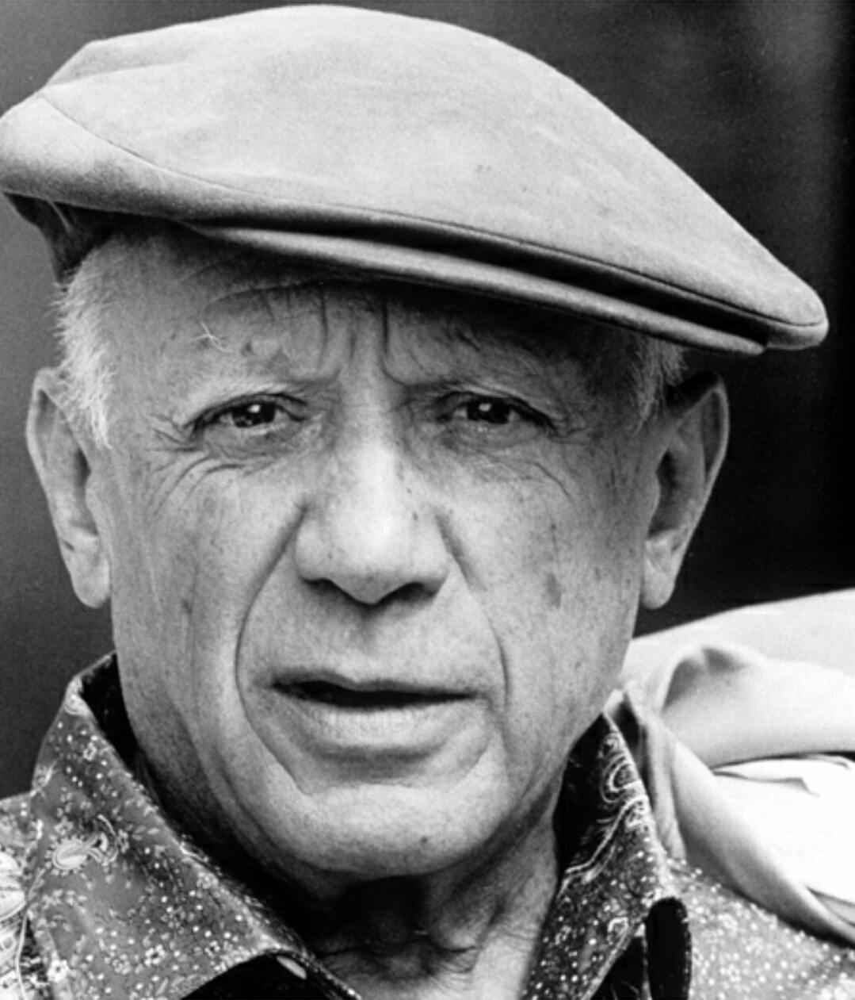
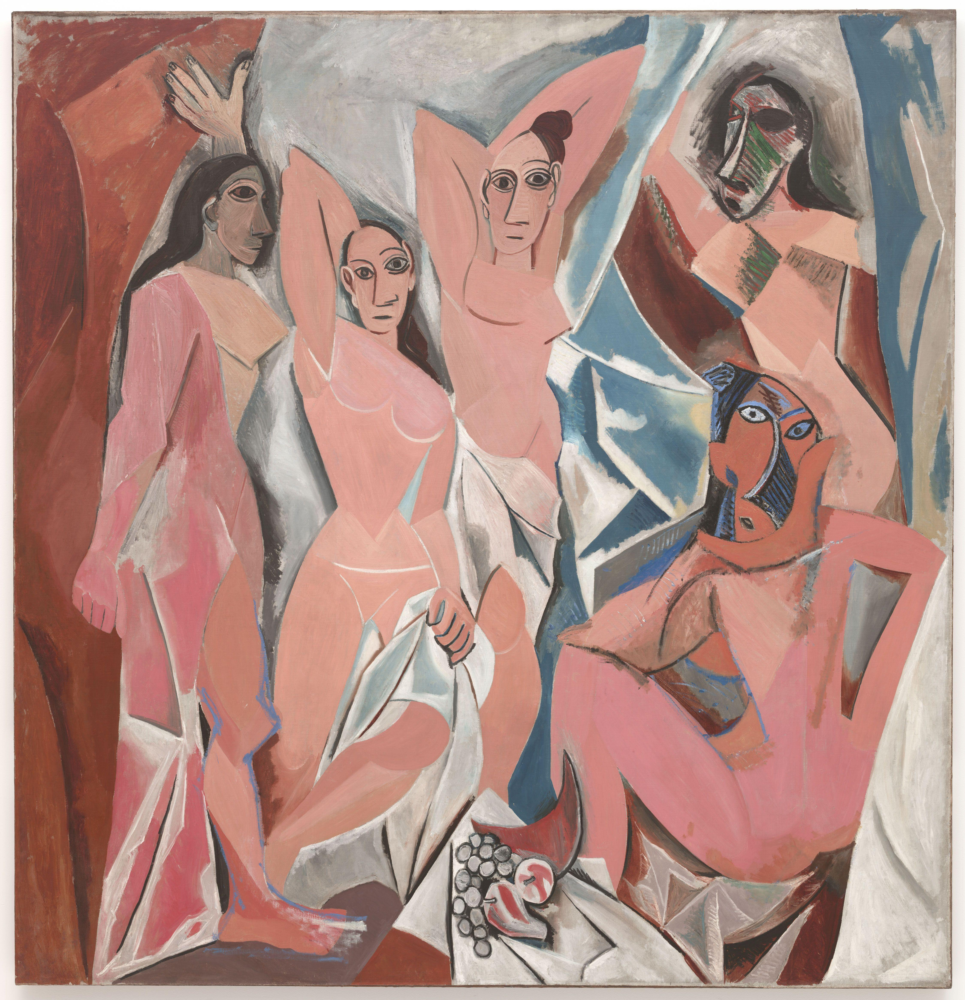
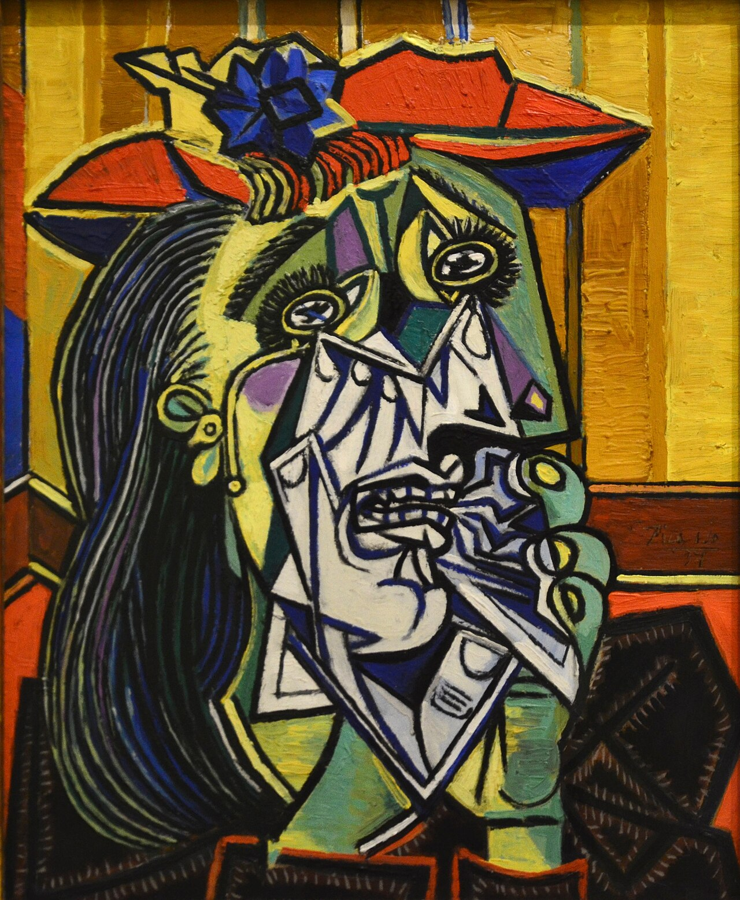
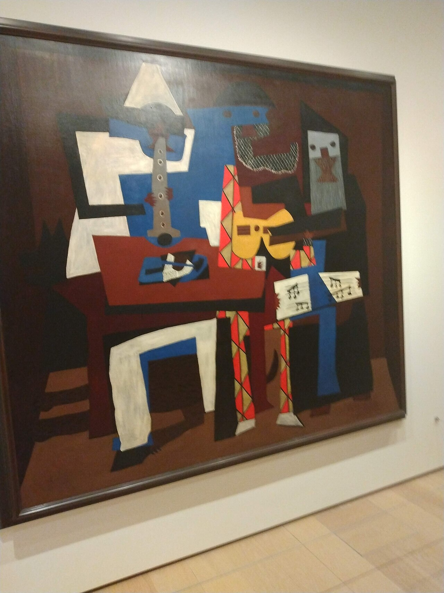

Guernica
A vast, anguished response to wartime violence, built from fractured figures, a horse, and a bull.
A life of reinvention
A prolific modern artist whose experiments with form, perspective, and material kept changing the shape of twentieth-century art.

Biography
Pablo Picasso was born in Málaga, Spain, and showed exceptional skill as a young artist. After working in Barcelona and Paris, he moved through distinct early phases, including the somber Blue Period and the warmer Rose Period, before helping to develop Cubism with Georges Braque around 1907.
Cubism broke objects into planes and rearranged viewpoints, allowing a painting to suggest more than one angle at once. Picasso continued to experiment throughout his long career, working across painting, sculpture, printmaking, collage, ceramics, theatre design, and drawing.
His 1937 painting Guernica, made in response to the bombing of the Basque town during the Spanish Civil War, became a powerful anti-war image. Picasso’s range and appetite for change made him one of the defining artists of modern art.
Picasso treated form as something flexible. In Cubist works, familiar objects become intersecting facets; in later paintings, line and colour can be both playful and sharp. His art asks viewers to accept that one subject may contain multiple perspectives at the same time.
Four works to know
A vast, anguished response to wartime violence, built from fractured figures, a horse, and a bull.

Its sharply simplified figures announced a disruptive new approach to space and the human body.

A portrait of anguish in intense, broken colour that extends the emotional world of Guernica.

Flat planes, theatrical costumes, and bold colour create a playful Cubist ensemble.
Keep exploring
The collection is full of artists who made the familiar strange—and the strange fascinating.